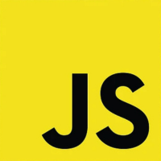
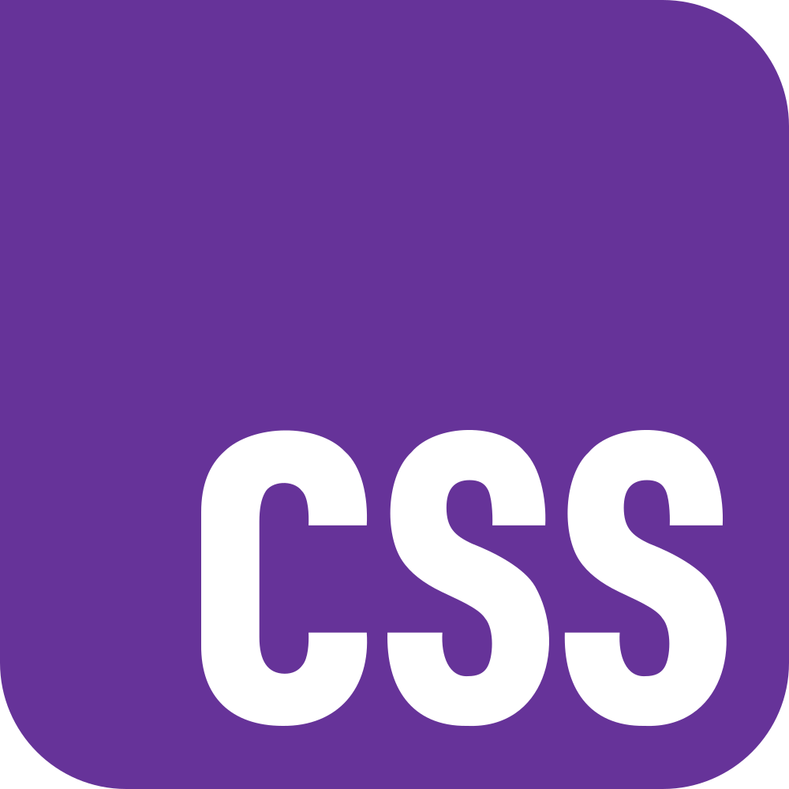
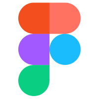
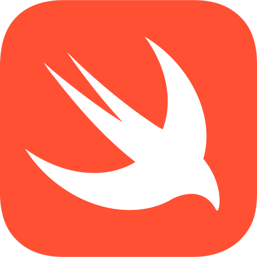
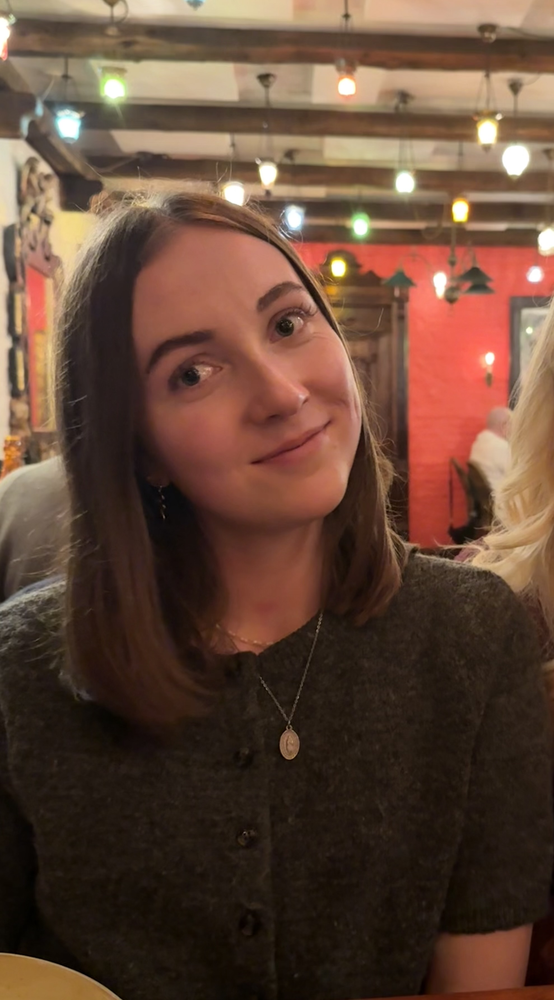

Tekniske færdigheder











Datamatiker studerende
Kreativ og lærelysten 4. semester studerende
Hej, jeg hedder Catrina. Jeg læser til datamatiker, og jeg er på nuværende tidspunkt i gang med mit 4. semester. Noget jeg er vild med, er processen fra den første linje kode til det færdige produkt. Derfor synes jeg at programmering er vildt spændende! Jeg bruger min fritid på forskellige kreative hobbyer som at male og tegne. Derudover så bruger jeg også en del tid på at fordybe mig i mine studier, og jeg glæder mig til at omsætte min teori til praksis i en praktikplads på mit 5. semester.




Arbejde med fokus på selvstændig opgaveoversigt og grundighed, herunder koordinering af ad hoc-opgaver.
Ansvar for kundeservice og varehåndtering i en travl butik med fokus på selvstændighed og problemløsning.
Erfaring med samarbejde i teams på tværs af afdelinger og opretholdelse af overblik i perioder med højt tempo.
I samarbejde med min gruppe udarbejdede vi et digitalt lagerstyringssystem til destilleriet Sall Whisky. Systemet erstatter den manuelle papirproces og sikrer fuld sporbarhed i produktionen - lige fra destillering (New Make) og fadlagring til det færdige produkt.
I dette projekt udviklede min gruppe og jeg et netværksbaseret multiplayer-spil i realtid. Spillet går ud på, at flere spillere kan bevæge sig rundt i den samme labyrint samtidigt. Hver gang en spiller bevæger sig, sendes informationen til en central server, der lynhurtigt synkroniserer placeringer og point ud til alle de andre forbundne klienter.
En chat-applikation med integreret brugerstyring. I systemet kan man logge ind, oprette chatrum, skrive beskeder og administrere indhold. For at demonstrere adgangskontrol implementerede vi et rollesystem, hvor kun administratorer (niveau 3) kan oprette, redigere og slette chatrum samt tilgå den samlede brugerliste.